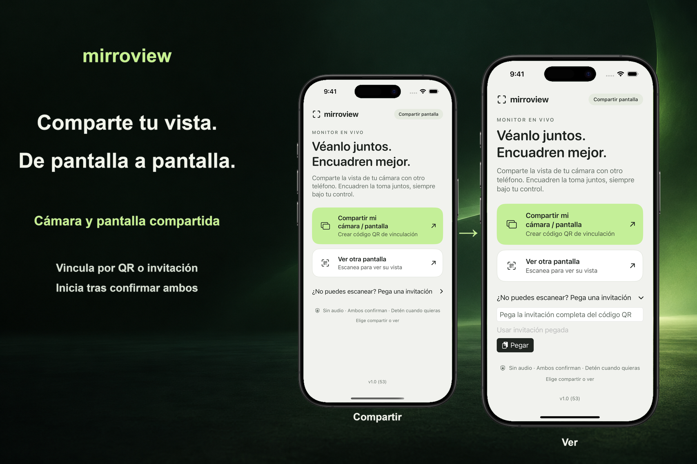

Vincúlense en persona
Una persona comparte una invitación. La otra escanea el código QR o pega la invitación, y ambas confirman la sesión.
Una vista compartida, por elección
Comparte la pantalla de tu iPhone o iPad con alguien cercano. Ambos dispositivos requieren iOS o iPadOS 17 o posterior. Ambas personas confirman la sesión y quien comparte autoriza la captura de pantalla mediante la interfaz del sistema.

Una persona comparte una invitación. La otra escanea el código QR o pega la invitación, y ambas confirman la sesión.
La pantalla de inicio inicia el uso compartido de toda la pantalla. Tras la autorización de iOS o iPadOS, quien comparte puede abrir otra app, incluida Cámara, para mostrar su pantalla.
Finaliza la sesión desde cualquiera de los dispositivos. Para la primera conexión, usa la misma red Wi-Fi local accesible entre sí. La disponibilidad de la conexión cercana depende de los dispositivos, la compatibilidad del sistema y las condiciones inalámbricas.
Compartir la pantalla puede mostrar notificaciones y otra información privada. La app no transmite audio. Quien mira aún puede hacer una captura de pantalla, grabar su pantalla o fotografiar lo que ve. Cierto contenido protegido puede mostrarse en blanco.